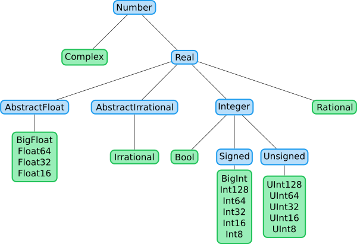
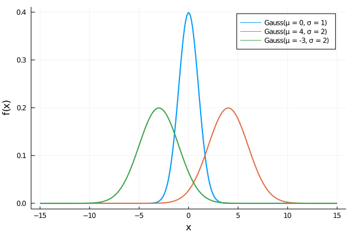

Abstract types
Julia does not allow abstract types to be instantiated. They can only be used to create a logical hierarchy of types. The following figure shows this hierarchy for numeric types introduced in the first lecture.

All types depicted in blue are abstract types, and all green types are concrete types. For example, Int8, Int16, Int32, Int64 and Int128 are signed integer types, UInt8, UInt16, UInt32, UInt64 and UInt128 are unsigned integer types, while Float16, Float32 and Float64 are floating-point types. In many cases, the inputs must be of a specific type. An algorithm to find the greatest common denominator should work any integer types, but it should not work for any floating-point inputs. Abstract types specify these cases and provide a context into which concrete types can fit.
Abstract types are defined by abstract type followed by the type name. It is possible to specify a type to be a subtype of another abstract type. The definition of abstract numeric types would be:
abstract type Number end
abstract type Real <: Number end
abstract type AbstractFloat <: Real end
abstract type AbstractIrrational <: Real end
abstract type Integer <: Real end
abstract type Signed <: Integer end
abstract type Unsigned <: Integer endWhen no supertype is specified, such as for Number, the default supertype is Any. The Any type is sometimes called the top type since all types are its subtypes. The bottom type is Union{}, and all types are supertypes of Union{}.
The <: operator can be used to check if the left operand is a subtype of the right operand.
julia> Signed <: Integer
true
julia> Signed <: Number
true
julia> Signed <: AbstractFloat
falseJulia also provides the isa function, which checks if a variable is an instance of a type.
julia> isa(1, Int64) # equivalent to typeof(1) <: Int64
true
julia> isa(1, Integer) # equivalent to typeof(1) <: Integer
true
julia> isa(1, AbstractFloat) # equivalent to typeof(1) <: AbstractFloat
falseOther handy functions are isabstracttype and isconcretetype that check whether a type is abstract and concrete, respectively.
julia> isabstracttype(Real)
true
julia> isabstracttype(Float64)
false
julia> isconcretetype(Real)
false
julia> isconcretetype(Float64)
trueComposite types
A composite type is a collection of key-value pairs. In many languages, composite types are the only kind of user-definable type. Even though Julia allows defining other types, composite types are used the most. Their main goal is to collect all information about one object within one structure. We will soon define the Rectangle type containing information about the size and the bottom-left point position of a rectangle. Collecting this information into one structure makes it simple to pass all information about the rectangle as arguments and use it for further computation. Moreover, it is possible to use composite types in combination with multiple-dispatch and define specialized functions for custom types.
The struct keyword defines composite types. It is followed by the composite type name and field names, where the latter may be annotated with types.
struct Rectangle
bottomleft::Vector{Float64}
width
height
endIf the type annotation is omitted, Any is used, and such a field may contain any value. A Julia convention suggests making the first letter in custom type names uppercase. We can create a new instance of the above type by calling Rectangle as a function. Its input arguments represent the fields of the Rectangle type.
julia> r = Rectangle([1,2], 3, 4)
Rectangle([1.0, 2.0], 3, 4)
julia> isa(r, Rectangle)
trueA constructor is calling a type as a function. Two constructors are automatically generated when a type is created. One accepts any arguments and converts them to the field types, and the other accepts arguments that match the field types exactly. If all fields are Any, only one constructor is generated. Julia creates these two constructors to make it easier to add new definitions without replacing the default constructor. We can list all constructors by the methods function.
julia> methods(Rectangle)
# 2 methods for type constructor:
[1] Rectangle(bottomleft::Array{Float64,1}, width, height) in Main at none:2
[2] Rectangle(bottomleft, width, height) in Main at none:2The fields of composite types can be accessed via the dot notation similarly to named tuples or via the getproperty function.
julia> r.width
3
julia> getproperty(r, :width)
3The fields can be then accessed anywhere, for example, within a function.
julia> area(r::Rectangle) = r.width * r.height
area (generic function with 1 method)
julia> function vertices(r::Rectangle)
x, y = r.bottomleft
w, h = r.width, r.height
return [[x, y], [x + w, y], [x + w, y + h], [x, y + h]]
end
vertices (generic function with 1 method)
julia> area(r)
12
julia> vertices(r)
4-element Array{Array{Float64,1},1}:
[1.0, 2.0]
[4.0, 2.0]
[4.0, 6.0]
[1.0, 6.0]The convenient function fieldnames returns a tuple with names of all structure fields represented as symbols.
julia> fieldnames(Rectangle)
(:bottomleft, :width, :height)
julia> fieldnames(typeof(r))
(:bottomleft, :width, :height)The same object can be defined in Python in the following way:
class Rectangle:
def __init__(self, bottomleft, width, height):
self.bottomleft = bottomleft
self.width = width
self.height = height
def area(self):
return self.width * self.height
def vertices(self):
x, y = self.bottomleft
w, h = self.width, self.height
return [[x, y], [x + w, y], [x + w, y + h], [x, y + h]]We can create an instance of this object and call the two functions defined in the class definition.
In [2]: r = Rectangle([1.0, 2.0], 3, 4)
In [3]: r.area()
Out[3]: 12
In [4]: r.vertices()
Out[4]: [[1.0, 2.0], [4.0, 2.0], [4.0, 6.0], [1.0, 6.0]]The declaration of the Rectangle class is very similar to the one in Julia. The main difference is that Python defines the functions inside of the class while Julia defines them outside. The Julia approach has several advantages:
- Julia has more options to logically split the code. This may increase readability.
- When working with a class defined in an external package, Julia can simply define additional functions to this class. Python needs to use inheritance to modify the class. When a multiple people use inheritance to the same class, it is not clear how to merge the inherited classes together. Therefore, Julia makes it simpler to create packages which combine and modify multiple existing packages.
- When working with multiple classes, it does not need to be clear to which a function should belong. Python sometimes needs to create an additional class which unites these two classes. Julia does not have this problem as functions are defined externally.
in Julia functions are defined outside of the declaration of the structure. This is very important since Julia uses multiple-dispatch. It means, that functions consist of methods, and Julia decides which method to use based on the number of input arguments and its types. Since all arguments are used for method selection, it would be inappropriate for functions to "belong" to some composite type. As a consequence, we can modify existing methods or add new ones without the necessity to change the composite type definition. This property significantly improves code extensibility and reusability.
Mutable composite types
Composite types declared with struct keyword are immutable and cannot be modified after being constructed.
julia> r.bottomleft = [2;2]
ERROR: setfield! immutable struct of type Rectangle cannot be changedHowever, immutability is not recursive. If an immutable object contains a mutable object, such as an array, elements of this mutable object can be modified. Even though Rectangle is an immutable type, its bottomleft field is a mutable array and can be changed.
julia> r.bottomleft[1] = 5
5
julia> r.bottomleft
2-element Array{Float64,1}:
5.0
2.0
julia> area(r)
12
julia> vertices(r)
4-element Array{Array{Float64,1},1}:
[5.0, 2.0]
[8.0, 2.0]
[8.0, 6.0]
[5.0, 6.0]To allow changing their fields, we need to define composite types as mutable by adding the mutable keyword.
mutable struct MutableRectangle
bottomleft::Vector{Float64}
width
height
endWe can work with mutable and immutable types in the same way.
julia> mr = MutableRectangle([1,2], 3, 4)
MutableRectangle([1.0, 2.0], 3, 4)
julia> isa(mr, MutableRectangle)
trueSimilarly to accessing field values, we can change them by the dot notation or the setproperty! function.
julia> mr.width = 1.5
1.5
julia> setproperty!(mr, :height, 2.5)
2.5
julia> mr
MutableRectangle([1.0, 2.0], 1.5, 2.5)The area function defined earlier will only work for Rectangle but not for MutableRectangle types. To define it for both types, we need type unions. The Union keyword creates a supertype of its inputs.
julia> const AbstractRectangle = Union{Rectangle, MutableRectangle}
Union{MutableRectangle, Rectangle}
julia> Rectangle <: AbstractRectangle
true
julia> MutableRectangle <: AbstractRectangle
trueWe now create the perimeter(r::AbstractRectangle) function. Since we specify that its input is an AbstractRectangle, it will work for both mutable MutableRectangle and immutable Rectangle types.
julia> perimeter(r::AbstractRectangle) = 2*(r.width + r.height)
perimeter (generic function with 1 method)
julia> perimeter(r)
14
julia> perimeter(mr)
8.0Parametric types
An important and powerful feature of the Julia type system is that it is parametric. Types can take parameters, and type declarations introduce a whole family of new types (one for each possible combination of parameter values). Parametric (abstract) types can be defined as follows:
abstract type AbstractPoint{T} end
struct Point{T <: Real} <: AbstractPoint{T}
x::T
y::T
endThe example above defines a parametric abstract type AbstractPoint and its parametric subtype Point. The declaration of the concrete type Point{T <: Real} has two fields of type T, where T can be any subtype of Real. This definition ensures that both fields are always of the same type. Note that Point{Float64} is a concrete type equivalent to replacing T in the definition of Point by Float64.
julia> isconcretetype(Point{Float64})
trueThis single declaration declares a concrete type for each type T that is a subtype of Real. The Point type itself is also a valid type object, containing all instances Point{Float64}, Point{Int64}, etc., as subtypes.
julia> Point{Float64} <: Point <: AbstractPoint
true
julia> Point{Int64} <: Point <: AbstractPoint
trueConcrete Point types with different T values are never subtypes of each other. Even though Float64 is a subtype of Real, Point{Float64} is not a subtype of Point{Real}.
julia> Point{Float64} <: Point{Real}
false
julia> Point{Float64} <: AbstractPoint{Float64}
true
julia> Point{Float64} <: AbstractPoint{Real}
falseThis behaviour has important consequences: while any instance of Point{Float64} may be represented as an instance of Point{Real}, these two types have different representations in memory:
- An instance of
Point{Float64}can be efficiently represented as a pair of 64-bit values; - An instance of
Point{Real}must be able to hold any pair ofRealvalues. Since instances ofRealcan have arbitrary size and structure, an instance ofPoint{Real}must be represented as a pair of pointers to individually allocatedRealobjects.
This efficiency gain is magnified for arrays: Array{Float64} can be stored as a contiguous memory block of 64-bit floating-point values, whereas Array{Real} is an array of pointers to Real objects.
Since Point{Float64} is not a subtype of Point{Real}, the following method cannot be applied to arguments of type Point{Float64}.
julia> coordinates(p::Point{Real}) = (p.x, p.y)
julia> coordinates(Point(1,2))
ERROR: MethodError: no method matching coordinates(::Point{Int64})
[...]
julia> coordinates(Point(1.0,2.0))
ERROR: MethodError: no method matching coordinates(::Point{Float64})
[...]The correct way to define a method that accepts all arguments of type Point{T} where T is a subtype of Real is as follows:
julia> coordinates(p::Point{<:Real}) = (p.x, p.y)
coordinates (generic function with 1 method)
julia> coordinates(Point(1,2))
(1, 2)
julia> coordinates(Point(1.0,2.0))
(1.0, 2.0)It is also possible to define a function for all subtypes of some abstract type.
julia> Base.show(io::IO, p::AbstractPoint) = print(io, coordinates(p))
julia> Point(4, 2)
(4, 2)
julia> Point(0.2, 1.3)
(0.2, 1.3)There are two ways how to instantiate the Point type. The first one does not specify the T parameter and lets Julia automatically decide the appropriate type. The second one specifies the T parameter manually.
julia> Point(1, 2)
(1, 2)
julia> Point{Float32}(1, 2)
(1.0f0, 2.0f0)The first way works only if the arguments have the same type.
julia> Point(1, 2.0)
ERROR: MethodError: no method matching Point(::Int64, ::Float64)
Closest candidates are:
Point(::T, !Matched::T) where T<:Real at none:3This situation can be handled by defining custom constructors, as we will discuss in the next section.
Define a structure that represents 3D-points. Do not forget to define it as a subtype of the AbstractPoint type. Then add a new method to the coordinates function.
Solution:
There are several possibilities for defining the structure. We define it as a structure with three fields. Another option is to use a tuple to store the point coordinates.
struct Point3D{T <: Real} <: AbstractPoint{T}
x::T
y::T
z::T
end
coordinates(p::Point3D) = (p.x, p.y, p.z)Since the show function was defined for the abstract type AbstractPoint and uses the coordinates function, the custom print is applied to Point3D without the need for further changes.
julia> Point3D(1, 2, 3)
(1, 2, 3)
julia> Point3D{Float32}(1, 2, 3)
(1.0f0, 2.0f0, 3.0f0)Constructors
Constructors are functions that create new instances of composite types. When a user defines a new composite type, Julia creates the default constructors. Sometimes it is helpful to add additional constructors. In the example from the previous section, we may want to create an instance of Point from two numbers with different types. This can be achieved by defining the following constructor.
Point(x::Real, y::Real) = Point(promote(x, y)...)The promote function converts its arguments to the supertype that can represent both inputs. For example, promote(1, 2.3) results in the tuple (1.0, 2.3) because it is possible to represent Int64 by Float64, but not the other way round. We can test the new constructor on the example from the end of the previous section. As expected, the result has the type Point{Float64}.
julia> Point(1, 2.0)
(1.0, 2.0)
julia> typeof(Point(1, 2.0))
Point{Float64}The constructor defined above is the outer constructor because it is defined outside of the type definition. A constructor behaves like any other function in Julia and may have multiple methods. We can define new methods to add additional functionality to a constructor. On the other hand, outer constructors cannot construct self-referential objects or instances with some special properties. In such a case, we have to use inner constructors, which differ from outer constructors in two aspects:
- They are declared inside the composite type declaration rather than outside of it.
- They have access to the local function
newthat creates new instances of the composite type.
For example, one may want to create a type with two real numbers, where the first number cannot be greater than the second one. The inner constructor can ensure this.
struct OrderedPair{T <: Real}
x::T
y::T
function OrderedPair(x::Real, y::Real)
x > y && error("the first argument must be less than or equal to the second one")
xp, yp = promote(x, y)
return new{typeof(xp)}(xp, yp)
end
endIf an inner constructor method is provided, no default constructor method is constructed. The example above ensures that any instance of the OrderedPair satisfies x <= y.
julia> OrderedPair(1,2)
OrderedPair{Int64}(1, 2)
julia> OrderedPair(2,1)
ERROR: the first argument must be less than or equal to the second one
[...]Inner constructors have an additional advantage. Since outer constructors create the object by calling an appropriate inner constructor, even if we define any number of outer constructors, the resulting instances of the OrderedPair type will always satisfy x <= y.
Define a structure that represents ND-points and stores their coordinates as Tuple. Do not forget to define it as a subtype of the AbstractPoint type. Redefine the default inner constructor to create an instance of PointND from different types. Then add a new method to the coordinates function, and define function dim that returns the dimension of the point.
Hints: use the new function in the definition of the new inner constructor.
Bonus: Tuples with elements of the same type can be described by the special type NTuple{N, T}, where N is the number of elements and T their type.
julia> NTuple{2, Int64} <: Tuple{Int64, Int64}
trueSolution:
In this case, we can use an inner constructor with the optional number of input arguments. In the definition below, we use type annotation to set these arguments to be real numbers. Since we use the new function and our type is parametric, we have to specify N and type T.
struct PointND{N, T <: Real} <: AbstractPoint{T}
x::NTuple{N, T}
function PointND(args::Real...)
vals = promote(args...)
return new{length(args), eltype(vals)}(vals)
end
end
coordinates(p::PointND) = p.x
dim(p::PointND{N}) where N = NNote that we use the parameter N in the definition of the dim function.
Since the show function was defined for the abstract type AbstractPoint and uses the coordinates function, the custom printing function is immediately applied to the new type. Since we redefined the default constructors, we can create an instance of the PointND type from inputs of mixed types.
julia> p = PointND(1, 2)
(1, 2)
julia> dim(p)
2
julia> p = PointND(1, 2.2, 3, 4.5)
(1.0, 2.2, 3.0, 4.5)
julia> dim(p)
4Default field values
It may be beneficial to define custom types with default field values. Since a constructor is a function, one way to achieve this is to use optional or keyword arguments in its declaration. Another option is to use the @kwdef macro from Base that automatically defines keyword-based constructors.
Base.@kwdef struct MyType
a::Int # required keyword
b::Float64 = 2.3
c::String = "hello"
endThe methods function shows that Julia created three constructors. The @kwdef macro creates the first constructor; the other two constructors are the default constructors.
julia> methods(MyType)
# 3 methods for type constructor:
[1] MyType(; a, b, c) in Main at util.jl:438
[2] MyType(a::Int64, b::Float64, c::String) in Main at none:2
[3] MyType(a, b, c) in Main at none:2A MyType instance can be created by the default constructors.
julia> MyType(1, 2.3, "aaa")
MyType(1, 2.3, "aaa")The other way is to use the constructor with predefined field values. Then all values have to be passed as keyword arguments. The fields without default values are mandatory keyword arguments: we have to specify them.
julia> MyType(; a = 3)
MyType(3, 2.3, "hello")
julia> MyType(; a = 5, b = 4.5)
MyType(5, 4.5, "hello")Methods are associated with types; therefore, it is possible to make an arbitrary Julia object "callable" by adding methods to its type. Such "callable" objects are sometimes called functors. Using this technique to the MyType defined above, we can define a method that returns values of all its fields.
julia> (m::MyType)() = (m.a, m.b, m.c)
julia> m = MyType(; a = 5, b = 4.5)
MyType(5, 4.5, "hello")
julia> m()
(5, 4.5, "hello")Moreover, we can use multiple-dispatch for functors. We show an example, where the functor has a different behaviour when it is called with a number and a string.
(m::MyType)(x::Real) = m.a*x + m.b
(m::MyType)(x::String) = "$(m.c), $(x)"These two methods give different results.
julia> m(1)
9.5
julia> m("world")
"hello, world"Gaussian distribution is uniquely represented by its mean $\mu$ and variance $\sigma^2>0$. Write a structure Gauss with the proper fields and an inner constructor that checks if the input parameters are correct. Initialization without arguments Gauss() should return the standardized normal distribution ($\mu = 0$ and $\sigma = 1$). Define a functor that computes the probability density function at a given point defined by
\[f_{\mu, \sigma}(x) = \frac{1}{\sigma \sqrt{ 2\pi }} \exp\left\{ -\frac{1}{2} \left( \frac{x - \mu}{\sigma} \right) ^2 \right\},\]
Verify that the probability density function is defined correctly, i.e., its integral equals 1.
Solution:
One possible way to define this structure is the @kwdef macro, where we specify the default parameters. We also define an inner constructor that promotes the inputs to a same type, and checks if the variance is positive.
Base.@kwdef struct Gauss{T<:Real}
μ::T = 0
σ::T = 1
function Gauss(μ::Real, σ::Real)
σ^2 > 0 || error("the variance `σ^2` must be positive")
pars = promote(μ, σ)
return new{eltype(pars)}(pars...)
end
endWe specified the parameter T by eltype(pars) in the call of the new function. The probability density function can be defined as a functor in the following way:
(d::Gauss)(x::Real) = exp(-1/2 * ((x - d.μ)/d.σ)^2)/(d.σ * sqrt(2*π))We use type annotation to ensure that all input arguments are real numbers.
julia> gauss = Gauss()
Gauss{Int64}(0, 1)
julia> gauss(0)
0.3989422804014327The integral of the probability density function over the real line should equal one. We check it numerically by discretizing the integral into a finite sum.
julia> step = 0.01
0.01
julia> x = -100:step:100;
julia> sum(Gauss(), x) * step
1.0000000000000002
julia> sum(Gauss(0.1, 2.3), x) * step
1.0We use sum with a function as the first input argument and apply it to each value of the second argument. This is possible because we defined a functor for Gauss. The result is the same as sum(Gauss().(x)). The difference is that the former, similarly to generators, does not allocate an array.
The previous exercise defined a new type representing the Gaussian distribution. We also defined a functor that computes the probability density function of this distribution. It makes sense to visualize the probability density function using the Plots package. Unfortunately, it is not possible to use Function plotting, i.e., the following will not work even though the Gauss type is callable.
plot(x, Gauss())Using the system of Julia types, it is possible to obtain special behaviour for a certain type only by defining a new method for this type. For example, if we use the plot function, all input data and plot attributes are preprocessed to some standard format and then the final graph is created. Due to the Julia type system, we can easily change how this preprocessing happens and define special behaviour for custom types.
For plotting, this is done by the @recipe macro from the RecipesBase package. The RecipesBase package provides the functionality related to creating custom plots and the Plots package uses this functionality. Moreover, since the RecipesBase package is much smaller, its first run is faster. The syntax is straightforward. In the function head, we define two inputs: our type and input x. In the function body, we define plot attributes in the same way as if we pass them into the plot function. Finally, we define the output of the function.
using RecipesBase
@recipe function f(d::Gauss, x = (d.μ - 4d.σ):0.1:(d.μ + 4d.σ))
seriestype := :path
label --> "Gauss(μ = $(d.μ), σ = $(d.σ))"
xguide --> "x"
yguide --> "f(x)"
linewidth --> 2
return x, d.(x)
endThe operators := and --> are specific for this package. Both set default values for plotting attributes. The difference is that the default values can be changed for --> but cannot be changed for :=.
The recipe above is equivalent to calling the plot function.
d = Gauss()
plot(x, d.(x);
seriestype := :path,
label = "Gauss(μ = $(d.μ), σ = $(d.σ))",
xguide = "x",
yguide = "f(x)",
linewidth = 2
)With the new plot recipe, we can plot the probability density function of the Gaussian distribution with different parameters.
using Plots
plot(Gauss())
plot!(Gauss(4, 2); linewidth = 4, color = :red)
plot!(Gauss(-3, 2); label = "new label", linestyle = :dash)